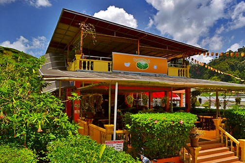

Cameron Tea
Cameron Highlands is the largest tea-growing region in Malaysia - home to vast plantations of this valuable crop that carpet the valleys in a lush sea of bright green. Tea was also one of the precursors to its development as a hill station, before its transformation into a major tourist destination. Today, the many tea plantations that dominate the valley are instrumental in drawing the multitudes of visitors Cameron Highlands receives each year. The various estates are mostly owned by Boh, the larger group established since 1929 by colonial owners; and Bharat, a slightly more recent local company that only began full-scale operations in the 1950s.


Bharat is the second largest tea producer in Cameron Highlands, with plantations in Tanah Rata and Tringkap that grow their signature brand 'Cameron Valley'.
Sungai Palas Boh Tea
Sungai Palas Garden is a tea plantation located in Brinchang about 5km north from town or 2km away from Kea Farm Market. Owned and managed by Boh Tea.
Sungai Palas Boh Tea- 
Cameron Valley Tea House is located along the main road in Kuala Terla, a village township nestled between Tringkap and Kampung Raja about 7km north of Kea Farm in Brinchang.
Cameron Valley